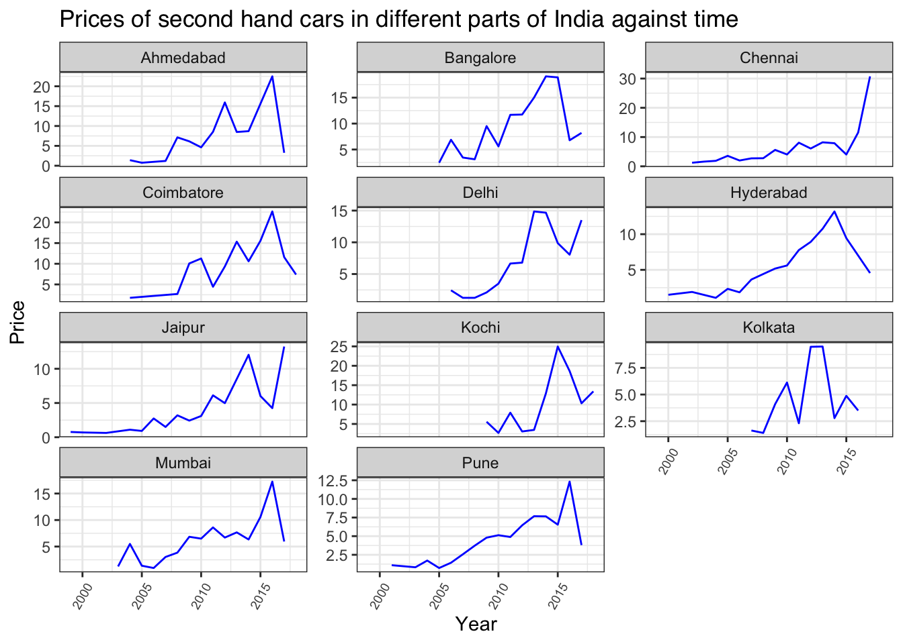
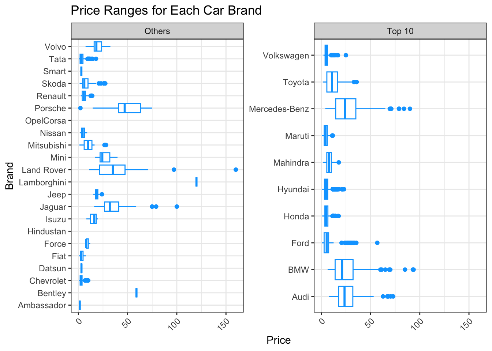
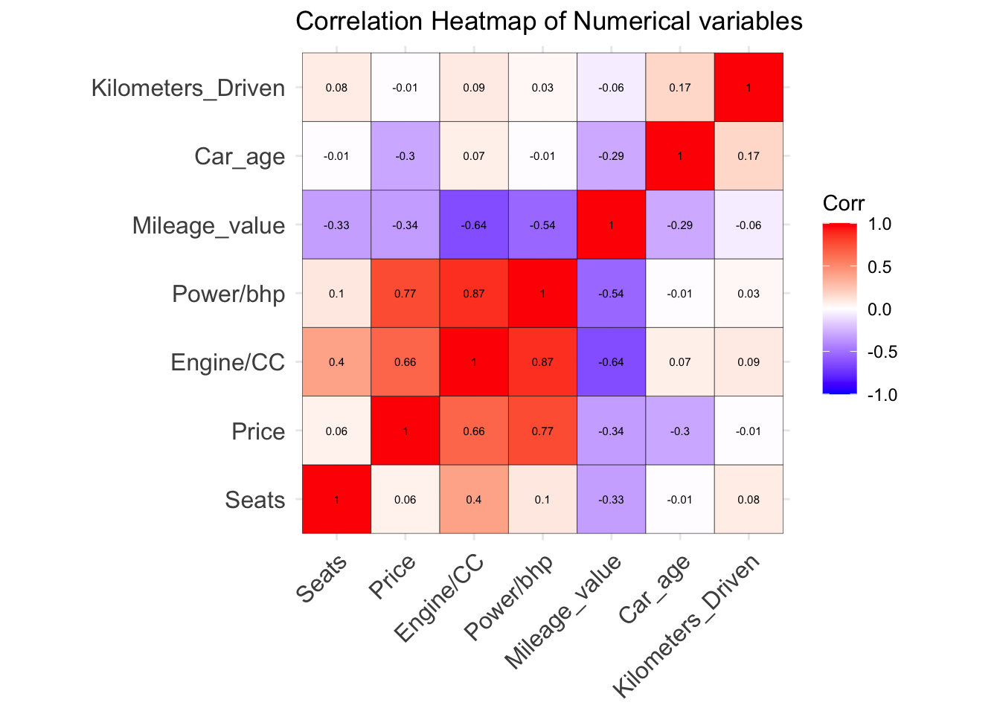

| Brand | Model | Location | Year | Car_age | Kilometers_Driven | Fuel_Type | Transmission | Owner_Type | Mileage_value | Mileage_unit | Engine/CC | Power/bhp | Seats | New_Price | Price | |
|---|---|---|---|---|---|---|---|---|---|---|---|---|---|---|---|---|
| Length:7253 | Length:7253 | Length:7253 | Min. :1996 | Min. : 5.00 | Min. : 171 | Length:7253 | Length:7253 | Length:7253 | Min. : 0.00 | Length:7253 | Min. : 72 | Min. : 34.2 | Min. : 0.00 | Length:7253 | Min. : 0.44 | |
| Class :character | Class :character | Class :character | 1st Qu.:2011 | 1st Qu.: 8.00 | 1st Qu.: 34000 | Class :character | Class :character | Class :character | 1st Qu.:15.17 | Class :character | 1st Qu.:1198 | 1st Qu.: 75.0 | 1st Qu.: 5.00 | Class :character | 1st Qu.: 3.50 | |
| Mode :character | Mode :character | Mode :character | Median :2014 | Median :10.00 | Median : 53416 | Mode :character | Mode :character | Mode :character | Median :18.16 | Mode :character | Median :1493 | Median : 94.0 | Median : 5.00 | Mode :character | Median : 5.64 | |
| NA | NA | NA | Mean :2013 | Mean :10.63 | Mean : 58699 | NA | NA | NA | Mean :18.14 | NA | Mean :1617 | Mean :112.8 | Mean : 5.28 | NA | Mean : 9.48 | |
| NA | NA | NA | 3rd Qu.:2016 | 3rd Qu.:13.00 | 3rd Qu.: 73000 | NA | NA | NA | 3rd Qu.:21.10 | NA | 3rd Qu.:1968 | 3rd Qu.:138.1 | 3rd Qu.: 5.00 | NA | 3rd Qu.: 9.95 | |
| NA | NA | NA | Max. :2019 | Max. :28.00 | Max. :6500000 | NA | NA | NA | Max. :33.54 | NA | Max. :5998 | Max. :616.0 | Max. :10.00 | NA | Max. :160.00 |
Data analysis
Here is a summary of all the variables in the dataset.
Let’s get started!
1. Lemon market: How are the prices of second-hand cars in India like?

There has been an increase in second-hand car prices till around 2013 (though this may vary, eg. Bangladore and Delhi experienced increases earlier) but seems to be mostly coming down after that, leading to a growing difference in prices of first and second hand cars. If we were to do some predictions (predictive pricing models will not be covered here), the decreasing trend can provide a benchmark against which sellers’ asking prices can be compared. If sellers consistently ask for prices significantly higher than the predicted values for similar cars, it may indicate that they are attempting to exploit buyers’ lack of information or conceal defects in the vehicles. Thus knowing price trends can better protect consumers in the lemon market as it allows them to assess the risk associated with purchasing a used car through price signals.
However, if the growing difference in prices is driven by increased uncertainty and risk associated with buying used cars, it may signal a market failure that requires intervention to improve transparency and consumer protection. This widening price gap could result from a worsening lemon market problem, where buyers become increasingly wary of purchasing used cars due to concerns about hidden defects or poor quality. Therefore, there is also a need to investigate the cause of this growing price difference.
Now let’s see how these pricing trends may differ in different parts in India.

In Chennai, Delhi, and Jaipur, it’s notable that price trends are still on the rise. Consumers in these areas should recognize that comparing prices of second-hand cars with those in other parts of India may not be valid. Additionally, they shouldn’t be surprised if sellers continue to offer such (second-hand) models at even higher prices.
2. Carbon emissions? Average kilometers driven in India
For this graph, one outlier from Chennai was removed.
There is a decrease in average kilometres driven over time and generally, since less distance is covered, there should be less gas emissions (though it still depends on a variety of factors).
If we were to assume ave_km_driven ≈ carbon emissions, this means that cars are becoming smaller contributors to the increase in global emissions as shown in the image since they display opposite trends. Moreover, it does not seem that CO2 emissions from cars will double by 2050 which means the policies in place, and the measure implemented by the government seem to be working.
Next, here’s a shiny app to investigate this phenomenon more closely in different cities of India.
If you click through, you can see that there is all cities show a decrease in average kilometers driven throughout the years. But upon closer inspection, different cars brands contribute differently to the average distance travelled. Depending on the fuel efficiency on the brand, more can then be derived about the true emission level generated by each one of them, which can aid the government in deciding which firms to clamp down on for emission levels.
3. Preferences and car usage in India
Here’s bar graphs of the categorical variables of this dataset.

Now, let’s zoom into car brands:

Maruti seems to be the most popular car brand that Indian consumers go for, seeing how it has the highest count of cars owned by Indians in all the regions (in the dataset). Let’s take a closer look into why this may be so by looking at price:

Upon closer examination of the prices of individual car brands, a preference for the most economical option, Maruti, is evident among the top 10. Meanwhile, brands such as Audi, BMW, and Mercedes-Benz, which command higher average prices, consequently hold a smaller market share as fewer consumers opt for them. However, their inclusion in the top 10 may suggest a significant demand among Indian consumers for luxury car brands.
Next, what about do the numerical variables of this dataset tell us?
- Preferences for low costs, 5-seater vehicles, lower power and engine vehicles.
- Automatic cars seem to have higher power and engine than manual cars –> More may opt for manual cars since they are of lower power and engine.
- Cars in India do not travel very long distances.
- Most of the histograms are highly skewed, which may lead to some poor performances of certain models.
4. Predictors in the market

Strongest correlation between the power and engine capacity of a car.
There is a strong correlation between costs and power of the car –> the higher the BHP, the higher the costs of the car which matches what vehicle analytics say. However, since customers in India tend to go for lower prices, producers need not create so many high-powered cars. Moreover, India’s cities are known for their traffic congestion thus smaller, less powerful engines are practical for navigating these conditions efficient.
Relationship of price and engine of a car is also moderately strong. This seems to be in line with India’s taxation policies: they impose higher taxes on cars with larger engines and as a result higher BHP, making such vehicles much more unafforable.
Citations:
https://www.cars24.com/blog/what-is-bhp-in-cars/
Ritchie, H., Roser, M., & Rosado, P. (2020, May 11). India: CO2 Country Profile. Our World in Data. https://ourworldindata.org/co2/country/india#what-are-the-country-s-annual-co2-emissions